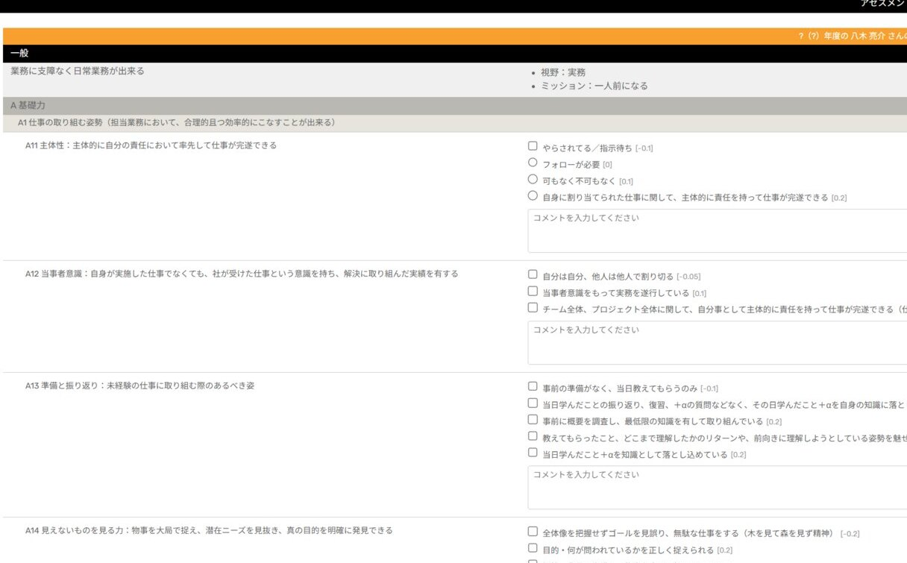
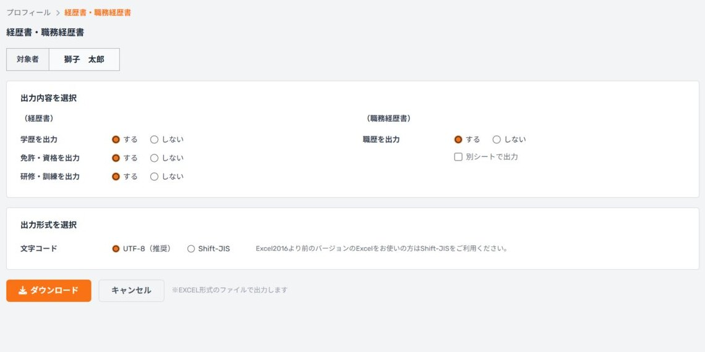

IT企業の人事考課に使われているのと同じ、800項目超の評価基準で自己診断ができます。評価項目ごとに「何ができれば評価されるのか」が明文化されているため、今の自分の強みと伸ばすべきポイントがはっきりわかり、スキルアップの指針になります。

プロジェクトごとの役割・環境・規模・担当工程を、用意された項目に回答しながら登録するだけ。経済産業省が策定したITスキル標準（ITSS）に準拠したレベルが自動で算定され、自分の技術レベルを客観的な指標で示せるようになります。

学歴・資格・研修・職歴などの情報をKEIGANに集約しておけば、経歴書・職務経歴書をExcel形式ですぐに出力できます。案件ごとに書類を作り直す手間がなくなり、企業への提案活動にかかる時間とコストを削減できます。

登録したキャリア情報は、ダッシュボードで直感的に確認できます。総合スコアや保有資格、経験したプログラム言語・産業・立場がグラフで一目でわかり、あなたの"はたらく実感"と次のキャリアの選択を後押しします。

KEIGANの評価基準は、特定の会社だけのローカルルールではなく、業界・社会全体で通用する基準として設計しています。だからこそ、会社に所属していないフリーランスの方にも使っていただきたい。個人でも価値のある機能は、制限なく無料でご利用いただけます。
あなたのキャリア情報を、ひとつの場所に。
評価項目ごとに自己評価し、コメントも記録。結果はスコアとして蓄積されます。
プロジェクトごとの役割・動作環境・開発環境・規模・担当工程を登録できます。
基本情報や学歴などの経歴を登録し、いつでも最新の状態に保てます。
国家資格・ベンダー資格などの取得履歴や、研修の受講履歴を記録できます。
学歴・資格・研修・職歴の中から、出力する内容を選んで書類を作成できます。
総合スコア、資格、経験した言語・産業・立場をグラフで可視化します。
IT企業さまには、属人的な評価をなくす人事評価SaaSを月額1,000円/IDからご提供。ご登録後2か月間は無料でお試しいただけます。
登録後すぐにご利用いただけます。
サービスの詳細は資料でもご確認いただけます。